Achievements
Achievements are displayed on the player menu, under the "Collections" tab, on the "Achievements" tab found at the bottom left, on every platform other than Xbox and PlayStation. If playing the game on Steam or PlayStation, additional achievements are available.
Achievements can unlock specific rewards within the game. Achievements for specific platforms, such as Steam, only need to be achieved once, but the associated rewards must be earned separately for each new game.
Unearned achievements appear as grayed-out on the player menu. Some achievements do not display on the player menu until completing other achievements.
Note that only in-game achievements are required for Perfection.
Most achievements unlock a unique hat for sale at the abandoned house in Cindersap Forest. In addition, the day after earning "Gofer" (Complete 10 Help Wanted requests), Mayor Lewis will send  500g in the mail. The day after earning "A Big Help" (Complete 40 Help Wanted requests), Mayor Lewis will send
500g in the mail. The day after earning "A Big Help" (Complete 40 Help Wanted requests), Mayor Lewis will send  2,500g in the mail. The day after earning "Master Angler" (Catch every fish), Willy will send a Stardrop in the mail.
2,500g in the mail. The day after earning "Master Angler" (Catch every fish), Willy will send a Stardrop in the mail.
Achievements List
Achievements that do not have an in-game icon are platform-specific achievements. Platforms with extra achievements or trophies beyond (or instead of) the in-game achievements are: Steam, PlayStation, and Xbox.
| Platform Icon | In-Game Icon | Achievement | Description | Unlocks | |
|---|---|---|---|---|---|
| Greenhorn | Earn 15,000g | 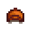 |
Good Ol' Cap | ||
| Cowpoke | Earn 50,000g | 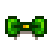 |
Lucky Bow | ||
| Homesteader | Earn 250,000g | 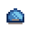 |
Cool Cap | ||
| Millionaire | Earn 1,000,000g | 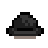 |
Bowler Hat | ||
| Legend | Earn 10,000,000g (Secret Achievement) | 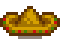 |
Sombrero | ||
| A Complete Collection | Complete the museum collection. | 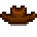 |
Cowboy Hat | ||
| A New Friend | Reach a 5-heart friend level with someone. | 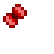 |
Butterfly Bow | ||
| Best Friends | Reach a 10-heart friend level with someone. | 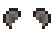 |
Mouse Ears | ||
| The Beloved Farmer | Reach a 10-heart friend level with 8 people. | 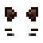 |
Cat Ears | ||
| Cliques | Reach a 5-heart friend level with 4 people. | 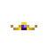 |
Tiara | ||
| Networking | Reach a 5-heart friend level with 10 people. | 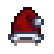 |
Santa Hat | ||
| Popular | Reach a 5-heart friend level with 20 people. | 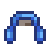 |
Earmuffs | ||
| Cook | Cook 10 different recipes. | Delicate Bow | |||
| Sous Chef | Cook 25 different recipes. | 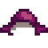 |
Plum Chapeau | ||
| Gourmet Chef | Cook every recipe. | 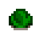 |
Archer's Cap | ||
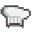 |
Chef Hat | ||||
| Moving Up | Upgrade your house. | Tropiclip | |||
| Living Large | Upgrade your house to the maximum size. (2nd upgrade, not cellar) | 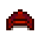 |
Hunter's Cap | ||
| D.I.Y. | Craft 15 different items. | Daisy | |||
| Artisan | Craft 30 different items. | 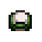 |
Trucker Hat | ||
| Craft Master | Craft every item. | 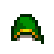 |
Gnome's Cap | ||
| Fisherman | Catch 10 different fish. | 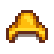 |
Sou'wester | ||
| Ol' Mariner | Catch 24 different fish. | 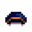 |
Official Cap | ||
| Master Angler | Catch every fish. | Eye Patch | |||
| Mother Catch | Catch 100 fish. | Watermelon Band | |||
| Treasure Trove | Donate 40 different items to the museum. | Blue Bonnet | |||
| Gofer | Complete 10 'Help Wanted' requests. | Polka Bow | |||
| A Big Help | Complete 40 'Help Wanted' requests. | Chicken Mask | |||
| Polyculture | Ship 15 of each crop. See (note below) | Cowpoke Hat | |||
| Monoculture | Ship 300 of one crop. See (note below) | Cowgal Hat | |||
| Full Shipment | Ship every item. | Goblin Mask | |||
| Prairie King | Beat 'Journey of the Prairie King'. | Prairie King Arcade System | |||
| The Bottom | Reach the lowest level of the mines. | Skull Key | |||
| Local Legend | Restore the Pelican Town Community Center. | Stardew Hero Trophy | |||
| Joja Co. Member Of The Year | Purchase all Joja Community Development projects. | Soda Machine | |||
| Mystery Of The Stardrops | Find every stardrop. | ||||
| Full House | Get married and have two kids. | ||||
| Singular Talent | Reach level 10 in a skill. | ||||
| Master Of The Five Ways | Reach level 10 in every skill. | ||||
| Protector Of The Valley | Complete all of the Adventure Guild Monster Slayer goals. | ||||
| Fector's Challenge | Beat 'Journey Of The Prairie King' without dying. (Secret Achievement) | ||||
| A Distant Shore | Reach Ginger Island. | Paper Hat | |||
| Well-Read | Read every book. Note: This applies to power books only. | Pageboy Cap | |||
| Two Thumbs Up | See a movie. | Jester Hat | |||
| Blue Ribbon | Get 1st place in the Stardew Valley Fair competition. | Blue Ribbon | |||
| An Unforgettable Soup | Delight the Governor. | Governor's Hat | |||
| Good Neighbors | Help your forest neighbors grow their family. | White Bow | |||
| Danger In The Deep | Reach the bottom of the 'dangerous' mines. | Space Helmet | |||
| Infinite Power | Obtain the most powerful weapon. | Infinity Crown | |||
| Perfection | Reach the summit. | Junimo Hat | |||
Notes
Fishing Achievements
Catching Green Algae, White Algae, Seaweed, River Jelly, Sea Jelly, or Cave Jelly counts towards the 4 fishing achievements (Fisherman, Ol' Mariner, Master Angler, and Mother Catch). Catching Trash does not count towards these achievements. Catching the quest fish for the Extended Family Qi's quest are not required to obtain the Master Angler achievement.
Polyculture
There are exactly 28 Crops that must be shipped to earn the Polyculture achievement ("Ship 15 of each crop"):
Spring Crops
Summer Crops
Monoculture
To earn the Monoculture achievement ("Ship 300 of one crop"), one of 33 Crops can be chosen -- any of the 28 crops listed above, or
Full Shipment
To earn the Full Shipment achievement ("Ship every item"), at least one of every item shown in the Shipping Collection tab of the player menu must be shipped.
'Help Wanted' Quests
The weekly quests on the Special Orders board and the weekly quests on Qi's Special Orders board count towards the Gofer ("Complete 10 'Help Wanted' requests") and A Big Help ("Complete 40 'Help Wanted' requests") achievements.
Friendship Achievements
The level of friendship with the player's children affects friendship achievements ("A New Friend", "Best Friends", "The Beloved Farmer", "Cliques", "Networking", and "Popular").
Crafting Achievements
The Wedding Ring does not count towards crafting achievements ("D.I.Y.", "Artisan", and "Craft Master"), even in Multiplayer games.
Retroactive Achievements
An achievement may not unlock properly in rare cases (e.g., because the game couldn't send the achievement to the underlying platform like Steam). Most missed achievements will be unlocked automatically when loading the save or sleeping in-game; if a specific achievement doesn't unlock, see the table below.
On PlayStation and Xbox consoles only:
- The game isn't allowed to resend trophies/achievements automatically. It will instead resend those when a relevant action is performed (see table below).
- Bug: an achievement may unlock without the matching trophy getting unlocked (e.g. because you were offline). If you slept in-game after that happens, it's not possible to unlock the trophy again on that save. As of the upcoming Stardew Valley 1.6.16: this is fixed in the next update.
Missed Achievement How to Unlock It Greenhorn Earn any amount of money. Cowpoke Homesteader Millionare Legend A Complete Collection - Donate a new item to the museum.
- As of the upcoming Stardew Valley 1.6.16: Enter the museum.
A New Friend Cause a friendship change with an NPC (e.g. shoot one with a slingshot). Best Friends Beloved Farmer Cliques Networking Popular Cook Cook an item. Sous Chef Gourmet Chef Moving Up As of the upcoming Stardew Valley 1.6.16: Open Robin's shop menu. Living Large D.I.Y. Craft an item. Artisan Craft Master Fisherman Catch a wild fish. Ol' Mariner Master Angler Mother Catch Treasure Trove - Donate a new item to the museum.
- As of the upcoming Stardew Valley 1.6.16: Enter the museum.
Gofer Complete a quest or special order. A Big Help Polyculture Ship an item; the achievement will be rechecked on the end-of-night shipping summary. Monoculture Full Shipment Prairie King Begin Journey of the Prairie King. The Bottom Visit level 120 of the Mines. Local Legend Enter the Community Center. Joja Co. Member Of The Year Enter JojaMart. Full House Kiss your spouse. Mystery Of The Stardrops Visit the Mastery Cave. Singular Talent Master of the Five Ways Protector Of The Valley Kill any monster. Fector's Challenge Begin Journey of the Prairie King. A Distant Shore Visit the Ginger Island dock area. Well-Read Read a book. Two Thumbs Up Watch a movie. Blue Ribbon Get 1st place in the Stardew Valley Fair competition again. An Unforgettable Soup Delight the Governor again. Good Neighbors Visit Cindersap Forest after the raccoon family reaches eight or more children. Danger In The Deep Visit floor 120 of the mines while the Shrine of Challenge is active. Infinite Power - Forge a new Infinity Blade, Infinity Dagger, or Infinity Gavel.
- As of the upcoming Stardew Valley 1.6.16: Load the save or sleep in-game with one in your inventory.
Perfection Visit the summit.
External Links
- Users with access to their saved game files may find the "Stardew Checkup" utility helpful for tracking their achievement progress. The utility is located at: https://mouseypounds.github.io/stardew-checkup/
- Global gameplay stats of achievements can be found for:
History
- 1.05: Fixed Fector's Challenge.
- 1.4: Fixed bug allowing Master Angler to be earned before catching all fish.
- 1.5: The Wedding Ring no longer needs to be crafted in multiplayer to earn "Craft Master".
- 1.6: Added new achievements. Changed in-game icon for several existing achievements.
- 1.6.9: The game now resends most missed achievements. For PlayStation/Xbox players, missed trophies are readded when performing a specific action instead.